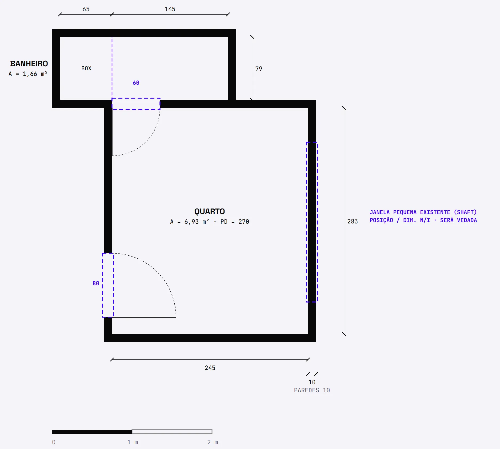
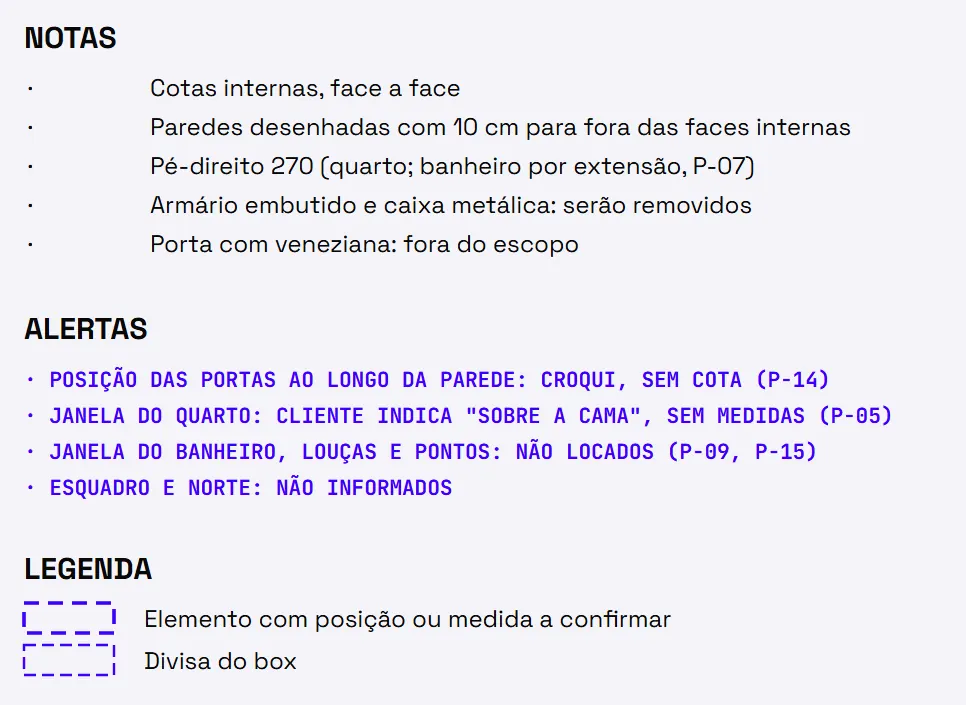
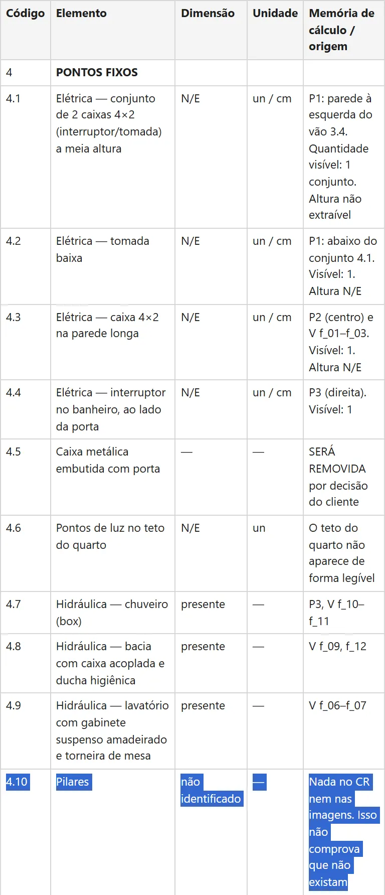
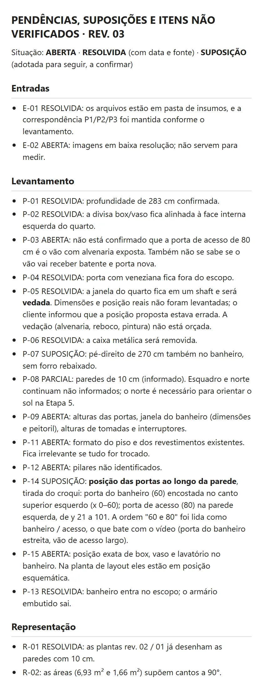

Passo 01 de 04 · Levantamento do estado atual a partir de croqui
Do croqui à planta cotada em escala, com as pendências marcadas
Ele lê o croqui, as fotos e o vídeo do cômodo e devolve a planta 1:50 em SVG, a tabela do levantamento com status e origem de cada linha e a lista de pendências.
# PEDIDO Anexei o croqui do cômodo feito à mão, com as cotas medidas, fotos e um vídeo do ambiente. Quero a planta do estado atual em escala 1:50, cotada, em SVG. Regra: use só as medidas do croqui e as que eu informar. Tudo o que não der para medir, marque como NÃO EXTRAÍVEL, na planta e numa tabela. Não invente medida. No fim, me dê a lista de todas as pendências. # FERRAMENTAS Este comando precisa ler imagens. Se o vídeo vier em .mp4, precisa também extrair quadros dele (ffmpeg ou execução de código). Se o seu chat não fizer isso, não descreva o vídeo por suposição: diga que não conseguiu abrir e peça os quadros como imagens, com o segundo de cada um. Precisa também gravar arquivos. Se o seu chat não grava arquivos, entregue cada arquivo da SAÍDA inteiro, num bloco de texto com o nome dele na primeira linha. # CONTEXTO Projeto de reforma de um cômodo residencial: [CÔMODO — ex.: quarto de casal com banheiro anexo]. Escopo da reforma: [ESCOPO — ex.: só o quarto; o banheiro fica como está; ou "a definir"]. O que eu já sei e não está no croqui: [DADOS INFORMADOS — ex.: pé-direito 2,60 m; paredes de 15 cm; ou "nada"]. Convenção das cotas do croqui: [CONVENÇÃO — ex.: internas, de face a face; ou "não sei"]. # ENTRADA Arquivos anexados: - croqui.[jpg/pdf]: rascunho da planta à mão, com cotas - fotos numeradas (foto_01, foto_02...): fotos ou panorâmicas do estado atual - video.mp4 (ou quadros dele): percurso pelo cômodo - pendencias.md, se já existir de uma volta anterior # TAREFA Levantamento do estado atual. Parar e pedir aprovação ao fim. 1. Ler o croqui, as fotos e o vídeo e extrair paredes, vãos (portas/janelas), pé-direito e pontos fixos (elétrica, hidráulica, pilares). 2. Usar as fotos e o vídeo para conferir e complementar: posição de janelas, peitoris, tomadas, piso e acabamentos existentes. Foto e vídeo mostram o que existe e onde; não servem para medir. 3. Entregar uma tabela de levantamento: código hierárquico | elemento | dimensão | unidade (coluna própria) | memória de cálculo / origem (croqui, foto ou quadro do vídeo). 4. Desenhar a planta pedida acima só com os valores da tabela. 5. Parar e me perguntar o que faltou. Não seguir para layout, estilo ou produto. # REGRAS - Toda linha da tabela tem um status: COTADO (escrito no croqui), INFORMADO (eu disse), CONFIRMADO (leitura do croqui que eu validei), CALC. (conta feita só com cotas, escrita na memória) ou NÃO EXTRAÍVEL (N/E). - Linha N/E leva o motivo e fica sem valor: não estime, não arredonde, não complete. Na planta, o N/E aparece marcado, não desenhado como se fosse medida. - Não ver um elemento não prova que ele não existe. Escreva "não identificado", diga onde procurou e que isso não comprova que não exista. - No topo do levantamento: fontes com sigla (CR para o croqui, P1, P2... para as fotos, V para o vídeo), convenção das cotas, origem (0,0) e sentido dos eixos. Norte só se eu informar; senão, N/E. - Conta que depende de suposição diz qual é (ex.: área supõe cantos a 90°, não verificado). - Leitura duvidosa do croqui (algarismo sobre um risco, letra borrada): use o valor lido, marque "a confirmar" e pergunte. - Planta: escala 1:50 escrita na folha, formato da folha declarado (ex.: A4 paisagem), legenda e faces cotadas. Espessura de parede só se cotada ou informada; senão, linha simples e uma nota. - Vão sem largura conhecida aparece como zona marcada em tracejado, na cor de alerta definida na legenda da planta, sem largura inventada. Vão com largura, mas sem posição medida, fica na posição do croqui, na mesma cor de alerta, com a nota "posição não medida". # SAÍDA Salve na pasta de saída do projeto (ex.: output/): - levantamento.md: cabeçalho do topo, legenda de status, tabela e escopo. - planta_atual.svg: a planta do pedido. - pendencias.md: arquivo acumulado da série. Se já existir, leia, não apague e acrescente. Uma entrada por suposição, item não verificado ou aproximado, com código (E- para entradas, P- para levantamento, R- para representação na planta), situação (ABERTA, SUPOSIÇÃO ou RESOLVIDA, esta com data e fonte) e motivo. No fim, no chat: a lista de todas as pendências ABERTAS e SUPOSIÇÃO, por código, e depois perguntas numeradas para os N/E que travam o layout (pé-direito, largura e posição das portas, janelas, o que fica e o que sai, leituras a confirmar). Pare aí. Quando eu responder, atualize os três arquivos como rev. 01: a linha muda para INFORMADO ou CONFIRMADO, com a data, e a pendência vira RESOLVIDA, com a data e a fonte. # CHECAGEM ANTES DE ENTREGAR - Toda linha tem status e origem? - Algum valor que não está no croqui, não foi informado e não é conta de cotas? Se sim, ele vira N/E. - Todo N/E tem motivo e aparece em pendencias.md ou nas perguntas? - A planta usa só valores da tabela? Medida na escala, ela dá as cotas do croqui? - Entrou móvel, layout ou estilo? Tire. Os três arquivos alimentam o comando 2, junto com o conceito.md que você escreve à mão com: uso do cômodo; estilo e referências; orçamento-alvo; o que fica e o que sai; exigências do morador.
O que ele resolve
Levantamento de reforma pequena quase sempre começa com um croqui à mão, umas fotos e um vídeo andando pelo cômodo. Pedir planta pra IA em cima disso é pedir pra ela adivinhar: a porta ganha largura, a janela ganha posição e o desenho sai bonito com medida que ninguém tirou.
Esse prompt só cota o que está no croqui ou o que você informou; foto e vídeo servem pra ver o que existe e onde, não pra medir. O que falta vira N/E com o motivo e sem número no lugar, sai tracejado na planta e entra na lista de pendências. E ele se recusa a dizer que não tem pilar só porque não viu nenhum.
O que ele devolve








Role a tabela para o lado →
| Código | Elemento | Dimensão | Unidade | Memória de cálculo / origem |
|---|---|---|---|---|
| 1.7 | Esquadro (ângulos dos cantos) | N/E | ° | Croqui à mão, sem diagonais medidas |
| 1.8 | Rebaixo de teto / sanca junto ao armário | N/E | cm | Visível em V f_14–f_15 e P2; não há medidas |
| 3.2 | Porta do banheiro — altura | N/E | cm | Pendência Sem cota |
| 3.4 | Vão com batente removido (alvenaria exposta) | N/E | cm | Pendência P1 (centro), V f_15–f_16: vão sem guarnição, tijolo aparente, dando para a sala de jantar. Falta confirmar se é a mesma "Door" de 3.3 (P-03) |
| 3.6 | Janela do banheiro — basculante de alumínio, 2 folhas, vidro canelado | N/E | cm | Pendência P3 e V f_08. Sem medidas nem peitoril |
| 3.7 | Janela pequena do quarto | N/E | cm | Cliente: fica em um shaft, com luz muito baixa; será vedada. Dimensões e posição reais não levantadas; o cliente informou que a posição usada no rev. 01 estava errada |
| 4.1 | Elétrica — conjunto de 2 caixas 4×2 (interruptor/tomada) a meia altura | N/E | un / cm | Pendência P1: parede à esquerda do vão 3.4. Quantidade visível: 1 conjunto. Altura não extraível |
| 4.6 | Pontos de luz no teto do quarto | N/E | un | O teto do quarto não aparece de forma legível |
| 4.10 | Pilares | não identificado | — | Pendência Nada no CR nem nas imagens. Isso não comprova que não existam |
Saída real · planta rev. 03, levantamento rev. 02 · anonimizada
Macete(ando o apocalipse)
- Esse processo tende a ser mais preciso depois que você configurar as skills e agentes. Te explico como fazer essas coisas na nossa newsletter, o Campo Minado. Só clicar aqui.
- O engenheiro da nova geração é, acima de tudo, responsável. Lembre-se que IA pode cometer erros. Use ela como um facilitador, não como verdade definitiva. O prompt organiza e explicita o cálculo — quem responde pelo número continua sendo você.
- Porta com largura informada, mas sem posição medida, fica onde o croqui desenhou, tracejada na cor de alerta. Na tela parece medida e não é: antes de encostar marcenaria no vão, mede o afastamento do canto.
- Área e perímetro saem de conta com as cotas, e a conta supõe cantos a 90°. Em croqui à mão ninguém mediu esquadro (a linha de esquadro sai N/E). Antes de comprar piso pela área, tira as diagonais do cômodo.
- Vídeo só entra no levantamento se o seu chat extrair quadros dele. O prompt manda ele avisar quando não consegue e pedir os quadros como imagem. Se ele descreveu o vídeo mesmo assim, desconfia: é chute com cara de levantamento.
- Lê a lista de pendências antes de seguir pro layout. SUPOSIÇÃO não é RESOLVIDA: no exemplo, a tabela saiu com 19 linhas N/E, a lista com 6 pendências abertas, e o pé-direito do banheiro foi assumido igual ao do quarto, sem conferir forro. Responde as perguntas que ele faz no fim e pede a rev. 01 dos três arquivos, senão o passo 02 herda o buraco.
- Pilar "não identificado" não é pilar inexistente. Vai quebrar parede? Confere a estrutura, não a foto de celular.
Cada passo consome a saída do anterior
Esse é só um dos prompts que uso no meu dia a dia pra ganhar mais tempo livre.
Posto isso e muito mais no Instagram.